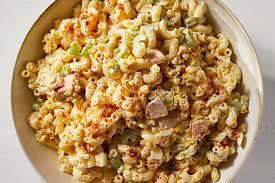

Tuna Macaroni Salad

Description
This tuna macaroni salad is easy to make with cooked pasta, celery, peas, relish, and mayonnaise.
It will remind you of Grandma's! Enjoy this basic comfort food when the weather is warm.
Ingredients
- 1 (12 ounce) package elbow macaroni
- 1 (10 ounce) can baby peas,drained
- 2 stalks celery, chopped
- 1 (5 ounce) can tuna, drained
- 1 cup mayonnaise
- salt and pepper to taste
- 3 large hard-cooked eggs, quatered
Steps
- Gather all ingredients.
- Bring a large pot of lightly salted water to a boil. Cook elbow macaroni in boiling water, stirring occasionally, until tender yet firm to the bite, about 8 minutes.
Drain and rinse under cold running water.
- Stir together macaroni, peas, celery, tuna, and onion in a large bowl.
- Mix in mayonnaise, relish, salt and pepper.
- Garnish with egg wedges and a sprinkle of paprika. Cover and chill for at least 1 hour before serving.